| Previous | Table of Contents | Next |
For categorical variables, the statistical data often consists of probabilities associated with various categories. Such probabilities are called proportions. Estimation of proportions is very similar to estimation of means. Each sample of n observations gives a sample proportion. We need to obtain a confidence interval to get a bound. Given that n1 of n observations are of type 1, a confidence interval for the proportion is obtained as follows:
Sample proportion = 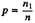
Confidence interval for proportion = 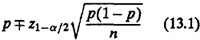
Here, z1-α/2 is the (1 - α/2)-quantile of a unit normal variate. Its values are listed in Table A.2 in the Appendix.
The previous formula for proportions is based on approximating binomial distribution (see Section 29.3) by a normal that is valid only if np≥10. If this condition is not satisfied, the computations are too complex to discuss here. They require using binomial tables. In particular, t-values cannot be used.
Sample proportion = p = 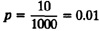
Since the condition np ≥ 10 is satisfied, Equation (13.1) can be used:
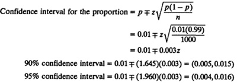
Thus, at 90% confidence we can state that 0.5 to 1.5% of the pages from the printer are illegible. The chance of error in this statement is 10%. If we want to minimize the chance of error to 5%, the 95% confidence numbers should be used.
The test for zero mean can be easily extended to test proportions, as shown by the following example.
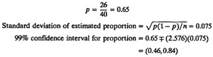
The confidence interval includes 0.5 (the point of equality). Therefore, we cannot say with 99% confidence that system A is superior.
Let us repeat the computations at 90% confidence.
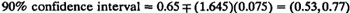
The confidence interval does not include 0.5. Therefore, we can say with 90% confidence that system A is superior.
The confidence level of conclusions drawn from a set of measured data depends upon the size of the data set. The larger the sample, the higher is the associated confidence. However, larger samples also require more effort and resources. Thus, the analyst’s goal is to find the smallest sample size that will provide the desired confidence. In this section, we present formulas for determining the sample sizes required to achieve a given level of accuracy and confidence. Three different cases: single-system measurement, proportion determination, and two-system comparison are considered. In each case, a small set of preliminary measurements are done to estimate the variance, which is then used to determine the sample size required for the given accuracy.
Suppose we want to estimate the mean performance of a system with an accuracy of and a confidence level of 100(1 - α)%. The number of observations n required to achieve this goal can be determined as follows.
We know that for a sample of size n, the 100(1 - α)% confidence interval of the population mean is
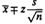
The desired accuracy of r percent implies that the confidence interval should be 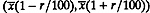. Equating the desired interval with that obtained with n observations, we can determine n:
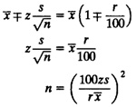
Here, z is the normal variate of the desired confidence level.
Required accuracy = 1 in 20 = 5%
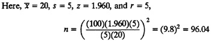
A total of 97 observations are needed.
This technique can be extended to determination of proportions. The confidence interval for a proportion was shown in Section 13.8 to be
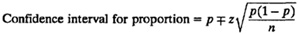
To get a half-width (accuracy of) r,
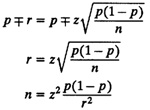
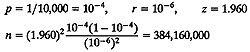
A total of 384.16 million pages must be observed.
The requirement of nonoverlapping confidence intervals allows us to compute the sample size required to compare two alternatives as shown by the following example.
For the two confidence intervals to be nonoverlapping, the upper edge of the lower confidence interval should be below the lower edge of the upper confidence interval:
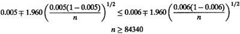
We need to observe 85,000 packets.
The formulas presented in this chapter are summarized in Box 13.1.
EXERCISES
13.1 Given two samples {x1, x2, . . . , xn} and {y1, y2, . . . , yn} from a normal population N(α, 1), what is the distribution of

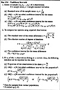
Box 13.1 Confidence Intervals
13.2 Answer the following for the data of Exercise 12.11:
13.3 For the code size data of Table 11.2, find the confidence intervals for the average code sizes on various processors. Choose any two processors and answer the following:
Since the code sizes vary over several orders of magnitude, the arithmetic mean and its confidence interval are not very useful. Do not make any conclusions from the results of this exercise. This data is reconsidered in Chapter 21.
Note:
| Previous | Table of Contents | Next |
){kind=link}
){kind=link}